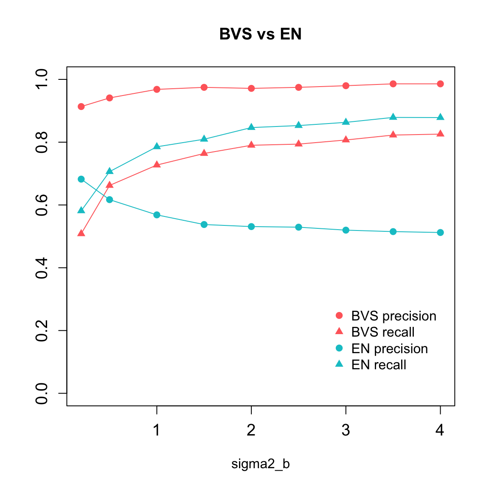

Comparison was done between the BVS and EN method across a series of \(\sigma^2_{\beta}\) values, which reflect the magnitude of non-zero \(\beta\), or the signal level. The criteria include precison and recall rates averaged over a number of repeated trials.
Load required packages:
library(pscl)
library(mvtnorm)
library(VennDiagram)Load BVS functions, elastic net function, and the data generation function:
source("code/BVS.R")
source("code/ElasticNet.R")
source("code/data_gen.R")Here, we randomly generate simluation data using the following steps:
N = 50
P = 50
sparse = 0.2
niter = 1000
burn = 200
sigma2_e_true = 1
alpha_true = c(0.5,-2)
prior_sigma2e = list(g0=1,h0=1)
prior_sigma2b = list(g1=1,h1=1)
binary.A = F
X.sd = 1
Sigma2_b = c(0.2,seq(0.5,4,0.5))
stats.summary = data.frame(matrix(nrow = length(Sigma2_b), ncol = 9))
names(stats.summary) = c('sigma2_b','sparse','en.precision','en.recall','bvs.precision',
'bvs.recall','bvs.inv_spec','bvs.pp0','bvs.pp1')
rep = 30 # number of trials
seed0 = 12345
set.seed(seed0)
seeds = sample(100000,size=rep)We iterated over values of \(\sigma^2_{\beta}\) from 0.2 to 4. For each \(\sigma^2_{\beta}\) value, we randomly generated 30 sets of data and run the both BVS and EN. For each BVS trial, 1000 Gibbs sampling steps were run, and a burn-in of 200 steps was used as the algorithm converges pretty fast.
for (s in 1:length(Sigma2_b)){
sigma2_b_true = Sigma2_b[s]
print(paste("True sigma2_b:",sigma2_b_true))
stats.summary$sigma2_b[s] = sigma2_b_true
en = list(overlap = matrix(nrow = rep,ncol = 3))
bvs = list(overlap = matrix(nrow = rep,ncol = 3), means = matrix(nrow = rep,ncol = 4),
pip = matrix(nrow = rep,ncol = 2))
for (i in 1:rep){
seed = seeds[i]
data = data.gen(N,P,peak.mean=NULL,peak.cov=NULL,X.sd,binary.A,sparse,alpha_true,sigma2_e_true,sigma2_b_true,seed)
X = data$X
y = data$y
A = data$A
beta_true = data$beta_true
en$overlap[i,] = EN.analysis(X,y,beta_true,seed)
stats = BVS(y,X,A,alpha_true,sigma2_e_true,sigma2_b_true,beta_true,prior_sigma2e,prior_sigma2b,niter,burn,seed)
bvs$overlap[i,] = stats$overlap
bvs$means[i,] = stats$means
bvs$pip[i,] = stats$pip
}
stats.summary$sparse[s] = mean(bvs$overlap[,1])/P
print(paste("Averaged sparsity:",mean(bvs$overlap[,1])/P))
stats.summary$en.precision[s] = mean(en$overlap[,3]/en$overlap[,2])
stats.summary$en.recall[s] = mean(en$overlap[,3]/en$overlap[,1])
stats.summary$bvs.precision[s] = mean(bvs$overlap[,3]/bvs$overlap[,2])
stats.summary$bvs.recall[s] = mean(bvs$overlap[,3]/bvs$overlap[,1])
stats.summary$bvs.inv_spec[s] = mean((bvs$overlap[,2]-bvs$overlap[,3])/(P-bvs$overlap[,1]))
stats.summary$bvs.pp0[s] = mean(bvs$pip[,1])
stats.summary$bvs.pp1[s] = mean(bvs$pip[,2])
}library('kableExtra')
knitr::kable(stats.summary,"html") %>% kable_styling() %>% scroll_box(width="800px",height='400px')| sigma2_b | sparse | en.precision | en.recall | bvs.precision | bvs.recall | bvs.inv_spec | bvs.pp0 | bvs.pp1 |
|---|---|---|---|---|---|---|---|---|
| 0.2 | 0.1893333 | 0.6822616 | 0.5812879 | 0.9134524 | 0.5082083 | 0.0131037 | 0.0933597 | 0.5439212 |
| 0.5 | 0.1893333 | 0.6169407 | 0.7061917 | 0.9409632 | 0.6621549 | 0.0106802 | 0.0788601 | 0.6794149 |
| 1.0 | 0.1893333 | 0.5684184 | 0.7852958 | 0.9682011 | 0.7271164 | 0.0057359 | 0.0650752 | 0.7439618 |
| 1.5 | 0.1893333 | 0.5376701 | 0.8093446 | 0.9746429 | 0.7639683 | 0.0049229 | 0.0572876 | 0.7740325 |
| 2.0 | 0.1893333 | 0.5311106 | 0.8465560 | 0.9714021 | 0.7901635 | 0.0057359 | 0.0521823 | 0.7943649 |
| 2.5 | 0.1893333 | 0.5292573 | 0.8529197 | 0.9746429 | 0.7938672 | 0.0049229 | 0.0479837 | 0.8075548 |
| 3.0 | 0.1893333 | 0.5197765 | 0.8631049 | 0.9798677 | 0.8069649 | 0.0041099 | 0.0447546 | 0.8195959 |
| 3.5 | 0.1893333 | 0.5151279 | 0.8788456 | 0.9858333 | 0.8226275 | 0.0032327 | 0.0421549 | 0.8285281 |
| 4.0 | 0.1893333 | 0.5122498 | 0.8783826 | 0.9858333 | 0.8256578 | 0.0032327 | 0.0403924 | 0.8364815 |
(sparsity: averaged sparsity of the true models, pp0 and pp1: average posterior inclusion probabilities of the true zero \(\beta_i\)’s and true nonzero \(\beta_i\)’s.)
plot(stats.summary$sigma2_b, stats.summary$bvs.precision, ylim = c(0,1), type = 'l',
xlab = 'sigma2_b', ylab = '', col = 'indianred1', main = 'BVS vs EN',
cex.axis = 1.2)
points(stats.summary$sigma2_b, stats.summary$bvs.precision, pch=19, col = 'indianred1')
lines(stats.summary$sigma2_b, stats.summary$bvs.recall, type = 'l', col = 'indianred1')
points(stats.summary$sigma2_b, stats.summary$bvs.recall, pch = 17, col = 'indianred1')
lines(stats.summary$sigma2_b, stats.summary$en.precision, type = 'l',col='turquoise3')
points(stats.summary$sigma2_b, stats.summary$en.precision,pch=19, col = 'turquoise3')
lines(stats.summary$sigma2_b, stats.summary$en.recall, type = 'l',col='turquoise3')
points(stats.summary$sigma2_b, stats.summary$en.recall, pch = 17, col='turquoise3')
legend(x=2.8,y=0.3,legend = c('BVS precision','BVS recall','EN precision','EN recall'),
col = c('indianred1','indianred1','turquoise3','turquoise3'),
pch = c(19,17,19,17), bty = "n")